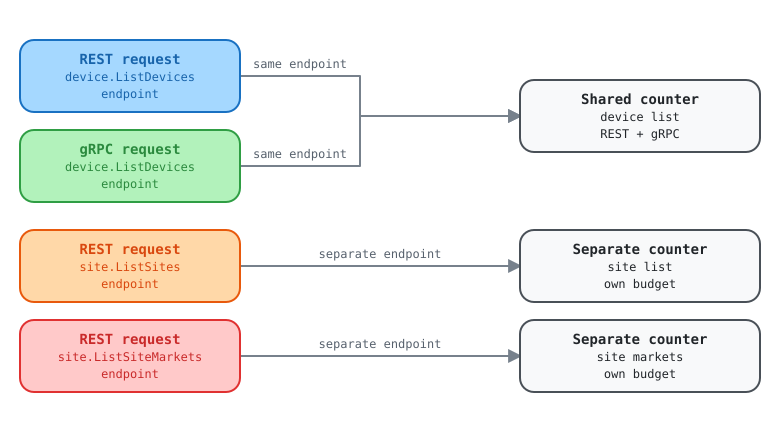

Documented rate limits say per-customer; the advertised counter behaves per-endpoint
Report for the Kentik API team
The KB documents per-customer limits. The x-ratelimit-* headers on V6
responses advertise a counter that resets independently per endpoint.
Separately, three documented enforcement mechanisms are invisible in the
headers entirely.
| Field | Value |
|---|---|
| Filed by | Kentik Community Python SDK |
| Date | 2026-09-21 |
| Surface | grpc.api.kentik.com (REST and gRPC) |
| Observed limit | 60, 60;w=60 |
| Scope observed | Per endpoint |
| Severity | Doc/behavior conflict, not a defect |
The ask
ImportantConfirm which is authoritative for V6: the documented per-customer limits, or the per-endpoint counter the headers advertise. We are not asking you to change the limit.
Per-endpoint rate limiting is a reasonable design and we are not claiming it is wrong. The problem is that the published documentation and the observed behavior describe different things, and a client cannot tell which to build against.
Summary
While adding rate-limit support to the community Python SDK we needed to know what
x-ratelimit-remaining is counting down. The headers follow
draft-polli-ratelimit-headers,
which specifies the limit, the remaining count, the reset interval, and the window length. It does
not carry a scope or partition key, and neither do Kentik's responses.
We measured the scope empirically. It is per endpoint, and REST and gRPC draw on the same per-endpoint budget. That is a more generous design than a single account-wide bucket, but a client that assumes account-wide will back off globally the moment one endpoint saturates, needlessly idling the other 59 budgets it still holds.
The conflict
The KB publishes these under the heading Per-customer limit, framed around the V5 Query and V5 Admin APIs (which were discontinued in January 2025):
| Per-customer limit | Non-query APIs | Query API |
|---|---|---|
| Maximum concurrent requests | 1 | 4 |
| Soft limit (per minute) | 20 | 30 |
| Server response delay past soft limit | 1.5s | 1s |
| Hard limit (per minute) | 60 | 100 |
| Hourly limit | 3750 | 1500 |
Measuring V6 at grpc.api.kentik.com, the advertised value is
x-ratelimit-limit: 60, 60;w=60. The 60 matches the documented non-query hard
limit exactly, which suggests the same regime governs V6. But the counter does not behave
per customer. It resets independently per endpoint (Evidence 2).
WarningTwo readings, and we cannot tell which is right
Either an Envoy per-route counter sits underneath a separate per-customer budget, and the headers advertise only the former, or the documentation predates the V6 gateway. A client implementing backoff has to guess, and guessing wrong in the conservative direction idles budget it actually holds.
Three limits that no header reveals
Independent of the scope question, the documentation describes enforcement that a header-driven client cannot see at all:
| Mechanism | Documented | In headers? | What a client experiences |
|---|---|---|---|
| Concurrency cap | 1 concurrent request (non-query) | No | Nothing announces it; a threaded or async client trips it silently |
| Soft limit plus response delay | 20/min, then +1.5s | No | Latency, not an error. Easily misread as a slow network or a hung call |
| Hourly limit | 3750/hour | No, headers carry only w=60 |
An unexplained 429 from a budget it never saw counting down |
The soft-limit delay is the most surprising of the three. A well-behaved client that ramps up gradually gets slower rather than throttled, with no signal distinguishing that from a degraded backend.
What we observed
| Property | Observed | How |
|---|---|---|
| Headers present | x-ratelimit-limit, x-ratelimit-remaining, x-ratelimit-reset |
Every response, REST and gRPC |
| Limit value | 60, 60;w=60 (60 per 60s, one window) |
Uniform across every endpoint tested |
Retry-After |
Absent | x-ratelimit-reset appears to serve that role |
| Scope | Per endpoint | Measured, see Evidence 2 |
| REST vs gRPC | One shared budget | Measured, see Evidence 1 |
| gRPC delivery | Initial metadata (trailing metadata empty) | Measured |
| Behavior on exceed | Not observed | Confirming it would mean deliberately exhausting a production quota |

Open the interactive explorer to select each part and see its evidence.
Evidence
1. REST and gRPC share one budget
Alternating REST and gRPC calls to device.ListDevices produces a single unbroken sequence:
REST call -> remaining=59
gRPC call -> remaining=58
REST call -> remaining=57
gRPC call -> remaining=56
REST call -> remaining=55
gRPC call -> remaining=54
2. The budget is per endpoint, not per service or per account
Two different endpoints inside the same service keep independent counters:
/site/v202509/sites remaining= 58
/site/v202509/sites remaining= 57
/site/v202509/site_markets remaining= 59 <- its own fresh budget
/site/v202509/sites remaining= 56
A separate run across three services (device, site,
label) showed the same: each endpoint starts from its own 60.
3. Nothing in the response indicates the scope, and the hourly window is absent
A client receiving x-ratelimit-remaining: 59 has no way to know whether that number
applies to the endpoint it just called, the service, the token, or the account. The draft the headers
follow has no field for it. The successor draft,
draft-ietf-httpapi-ratelimit-headers,
adds a quota-policy and partition concept for exactly this reason.
The headers also advertise only one window, w=60. The documented rolling-hour budget
of 3750 is enforced but never transmitted, so a client cannot track it even in principle.
4. Reproducing this
Any two read-only calls to different endpoints, inspecting response headers, will
show it. We used device.ListDevices, site.ListSites,
site.ListSiteMarkets, and label.ListLabels. Read-only throughout; we did
not deliberately exhaust any quota.
Why this matters to SDK consumers
An SDK that surfaces quota has to tell callers what the number means. With the scope undocumented, we can only report what we measured, and record that it is unconfirmed. If the scope ever changes, or differs by plan or by endpoint cost, every client that inferred it silently becomes wrong with no signal.
The practical failure mode is not over-consumption. It is under-consumption: a client that assumes an account-wide bucket will stop issuing all requests when one endpoint saturates.
Questions for the API team
- For V6, is the authoritative budget per customer (as documented) or per endpoint (as the headers behave)? If both exist, which one do the headers describe?
- Does the V5-framed table still apply to V6 at all? V5 was discontinued in January 2025, yet the documented non-query hard limit of 60 matches what V6 advertises exactly.
- Is the concurrency cap of 1 for non-query APIs still accurate for V6? It materially constrains any concurrent or async client, and nothing in the protocol surfaces it.
- Can the hourly budget be advertised as a second window in
x-ratelimit-limit? The draft the headers follow supports multiple windows, and clients currently cannot track it. - Is the soft-limit response delay still applied, and is there any way for a client to detect it rather than inferring it from latency?
- Is the omission of
Retry-Afterdeliberate, withx-ratelimit-resetas the intended substitute? - Do the limits vary by endpoint cost, plan, or account? We sampled four endpoints and saw one value.
Suggested fix
Mostly documentation. One optional protocol improvement:
- State whether the V6 budget is per customer or per endpoint, and update the rate-limiting section so it is not framed around discontinued V5 API categories.
- State that REST and gRPC share the budget. Clients cannot assume this.
- Keep the concurrency cap, soft-limit delay, and hourly limit documented prominently, since no header reveals them.
- Optional: advertise the hourly budget as a second window in
x-ratelimit-limit(for example60, 60;w=60, 3750;w=3600). The draft already supports this, and it would let clients track the limit that currently blindsides them.
Optionally, and only if it is already on a roadmap, emitting the standardized
RateLimit-Policy field would make the scope machine-readable rather than documented
prose.
Copy-paste ticket body
TITLE
V6 rate limiting: docs say per-customer, headers behave per-endpoint; three
documented limits are invisible in the protocol
CONTEXT
While adding rate-limit support to the community Python SDK we compared the
published limits against measured V6 behavior. They do not agree.
DOCUMENTED (kb.kentik.com/docs/apis-overview#api-rate-limiting)
Headed "Per-customer limit", framed around V5 Query / V5 Admin APIs, which
were discontinued in January 2025:
Max concurrent requests non-query 1 query 4
Soft limit (per minute) non-query 20 query 30
Response delay past soft non-query 1.5s query 1s
Hard limit (per minute) non-query 60 query 100
Hourly limit non-query 3750 query 1500
MEASURED (grpc.api.kentik.com, V6, read-only calls, 2026-09-21)
x-ratelimit-limit: 60, 60;w=60
x-ratelimit-remaining / x-ratelimit-reset present on every response
No Retry-After
The 60 matches the documented non-query hard limit exactly. But the counter
does not behave per customer.
1. REST and gRPC share one budget. Alternating transports on one endpoint:
59, 58, 57, 56, 55, 54 (unbroken sequence)
2. The budget resets per endpoint, not per service or per customer:
/site/v202509/sites remaining=58, 57, 56
/site/v202509/site_markets remaining=59 (independent counter)
3. gRPC delivers the same headers as initial metadata; trailing metadata is
empty.
THREE LIMITS NO HEADER REVEALS
- Concurrency cap of 1 (non-query). Nothing announces it. A threaded or
async client trips it silently.
- Soft limit at 20/min, then +1.5s server-side response delay. The client
sees latency, not an error, indistinguishable from a degraded backend.
- Hourly limit of 3750. Headers carry only w=60, so a client cannot track
it even in principle, then gets a 429 it could not anticipate.
WHY IT MATTERS
A client cannot tell which model to build against. Assuming per-customer means
backing off globally when one endpoint saturates, idling budget it still holds.
Assuming per-endpoint risks the reverse if a per-customer ceiling also exists.
The soft-limit delay is the subtlest: well-behaved clients get slower with no
signal explaining why.
ASK
1. For V6, is the authoritative budget per customer or per endpoint? If both
exist, which do the headers describe?
2. Does the V5-framed table still apply to V6? Please reframe it if so, since
V5 was discontinued in January 2025.
3. Is the concurrency cap of 1 still accurate for V6?
4. Can the hourly budget be advertised as a second window, e.g.
"60, 60;w=60, 3750;w=3600"? The draft the headers follow supports multiple
windows.
5. Is the soft-limit response delay still applied, and can a client detect it
other than by inferring from latency?
6. Is Retry-After intentionally omitted in favor of x-ratelimit-reset?
7. Do limits vary by endpoint cost, plan, or account? We sampled four
endpoints and saw one value.
NOT A DEFECT REPORT
Per-endpoint rate limiting is a reasonable design, and more generous than a
single shared bucket. The gap is that documentation and observed behavior
describe different things, and three enforcement mechanisms are invisible to
clients.
All probing was read-only. We did not confirm the behavior on exceed, because
that would mean deliberately exhausting a production quota.
Documented limits rechecked against kb.kentik.com/docs/apis-overview on
2026-09-24: unchanged, and the page still states no V6-specific limits.
Measured against grpc.api.kentik.com on 2026-09-21 with read-only calls from the
community_sdk_python SDK. No quota was deliberately exhausted.